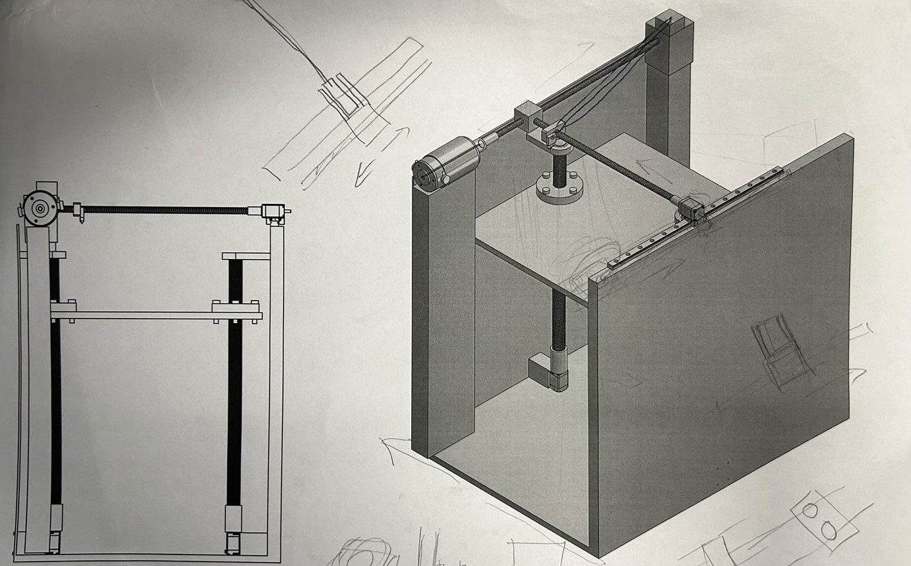

3D Printer
The 3d printer project is the design project required in course MIE243. we aim to design a 3d printer to achive high printing speed and printing quality with toleratable price. in terms of accomplishing the objectives of the project, the leadscrew combination design is selected as our proposed design. the design is shown below, we applied lead screw and ball screw to achieve the motion transformation from the rotational motion that provided by the stepper motor to linear motion. And we picked 3 nozzles to achieve the high speed requirement.

During the process of the design, we met problems when designing the y axis movement and solved it by analyzing the problem and researching. Our first version of the design is shown below, it is noticeable that there was only one stepper motor placed on the one side of the y axis while a rail is attached on the other side. While
During the process of the design, we met problems when designing the y axis movement and solved it by analyzing the problem and researching. Our first version of the design is shown below, it is noticeable that there was only one stepper motor placed on the one side of the y axis while a rail is attached on the other side. While